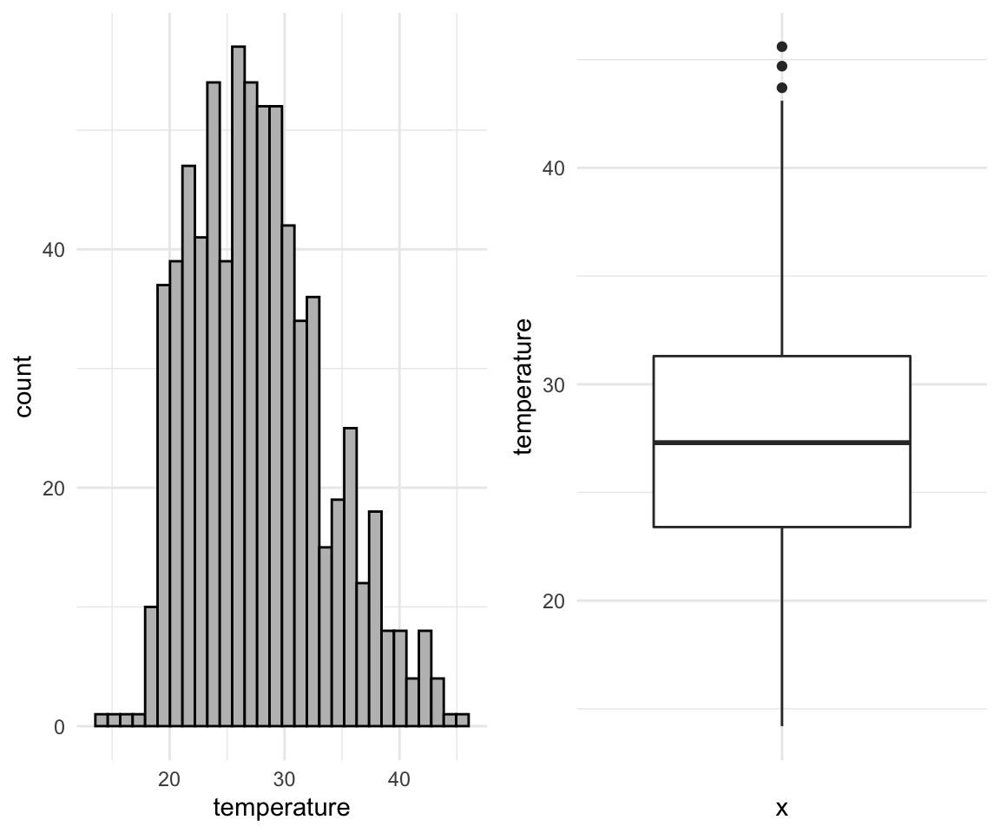
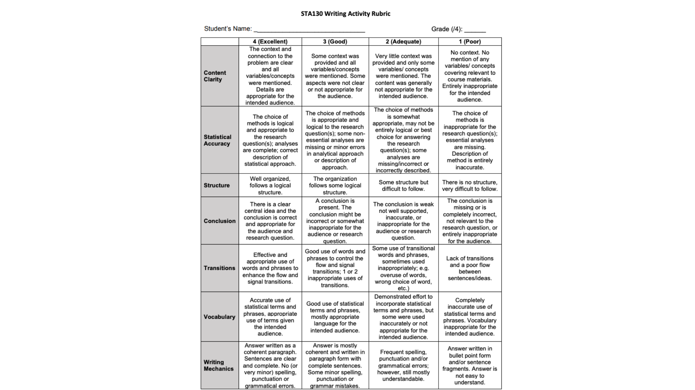

STA130 Spring 2020 - T0206
Michal Malyska
Setup
library(tidyverse)
# For data
library(VGAMdata)
library(insuranceData)
# For reproducibility
set.seed(1337)Tutorial 1
Agenda:
Intro (10 mins)
Visualization (20 mins)
Group Discussions (35 mins)
Written Evaluation (30 mins)
Intro
Tutorials for this class are mandatory - Total tutorial marks make up 20 % of your grade! Each week, you have the opportunity to gain 6 points: 1 point attendance, 1 point practice problem, and 4 points for the writing/presentation exercise.
Attendance
Attendance is important - not only do you get marks for showing up on time (and only if you show up on time). People who come to tutorials tend to do better on the midterm and poster presentations.
attendance_df %>% ggplot(aes(x = attendance, y = midterm_marks)) +
geom_point() +
theme_minimal() +
geom_smooth(method = "lm") +
scale_x_continuous(name = "Attendance(%)") +
scale_y_continuous(name = "Midterm Mark(%)") +
labs(title = "Attendance and Midterm marks")
Expectations:
Have questions completed and submitted to Quercus, no emailed homework will be accepted
Tutorial is NOT the place for troubleshooting R code. You should be prepared to discuss your results during tutorial. Instead, go to OH or post questions to the discussion board ahead of tutorial. OH are on Tues, Wed and Thurs.
We use RCloud (do not recommend anything else unless the student is an advanced R user) – all the packages they will need have already been included in the RCloud session.
Respectfully participate in group work and class discussions
Practice their English writing & oral presentation skills, particularly for non- statistician audiences
Show up on time, tutorial starts 10 past the hour and goes until the hour. If you need to miss a tutorial or leave early for a test (10 minutes early MAX), you should let me know ahead of time. Showing up late or leaving more than ten minutes early will result in an attendance score of zero.
Resources
R Studio Cloud can be slow and buggy so I usually recommend to my students setting it up locally. This is by no means necessary for this course but will be required for courses in the future, and will get you more familiar with the setup.
If you are interested in setting it up on your computer you can find a full guide here
Visualizations
What are the most effective types of graphs to summarize information in categorical or quantitative variables?
What does the distribution tell you about for each types of data (categorical or quantitative)?
How do you describe a histogram or a scatterplot? (refer to this week’s vocabulary list at the bottom)
Be mindful of how you present your findings – are you potentially misleading the audience? Is it reader friendly?
Think about the source of the data – this may have important implications for your interpretations!
Questions specific to your homework 1 question:
What type of distribution does the number of pages have?
Is there an association between number of pages and weight? Number of pages and type of cover (hard or paper)?
What types of figures (that we’ve learned so far) would be appropriate for this question? Why or why not?
Group Discussion
What do you notice about the number of bins a histogram has, its shape and precision?
In Question 1d, you could have presented both book cover types (hard or paper) in the same plot or presented them on separate plots. What are some considerations for which presentation you may want to choose (e.g. what are the pros and cons of each one)?
If presenting two plots side by side, what are some things to consider to ensure they are comparable and reader-friendly?
In questions 2 and 3, you saw examples of survivor bias. What is this? How does it impact, for example, the mean survival time calculated in Question 3?
Writing Guidelines
A possible writing template:
Give context to variables you will be discussing (mention the names, what they represent, units / types of values)
Describe the most striking features of the graphs and what they mean. Make a conclusion based on those features
Explain how you that conclusion is supported from the graphs
Good writing example:

Written Evaluation
HAND IN BY THE END OF TUTORIAL ON QUERCUS
Write a short paragraph to describe coherently the graphs you produced and structure these graphs to tell an interesting “story” about the data used in Question 1. You should use at least 2 graphs or plots from question 1 to support your story.
Vocabulary
Bar graphs, histograms:
Where are the data centered (towards the left, right, middle)
How much spread (relative to what?)
Shape: symmetric, left-skewed, right-skewed
The tails of the distribution (heavy-tailed or thin-tailed)
Modes: where, how many, unimodal, bimodal, multimodal, uniform
Outliers, extreme values
Frequency (which category occurred the most or least often; data concentrated near a particular value or category)
Scatterplots (bivariate or pairwise scatterplots):
Strong / weak relationship
Linear / nonlinear relationship
Direction of association (positive or negative)
Outliers (deviation from what?)
Any visible clusters forming
Each dot represents …
Tutorial 2
Agenda for today:
Frequent Class Questions
Vocabulary Review
Boxplots
Group Discussion
Written Evaluation
Frequent Class Questions
What is this course really about?
The course is designed such that you are introduced to concepts on Monday and assigned homework problems to work on during the week. Doing the homework allows you to develop hands-on experience with the necessary R code and analytical issues surrounding the analysis of real-world data. After completing the homework, tutorials provide you the opportunity to discuss what you observed. For example, what types of methods did you use, why you used those methods, what you observed, whether your findings fit your expectations, any limitations to your findings, etc. Tutorials also offer a critical opportunity to practice your ability to explain your research – via writing and speaking activities. As much as many of us hate writing or are shy to speak with others, these are critical skills for everybody working in statistics, particularly since we often work in multidisciplinary teams with people who do not have advanced statistical training!
Can we use aids for the written evaluations?
You are allowed these for your writing assignments, including dictionaries, collocations dictionaries, thesauruses, and translator apps. HOWEVER, you should make VERY sparing use of these aids for the following reasons:
Over-use of aids eats up too much of the 30 minutes.
The writing will usually turn out better if the student uses language they already know plus the language we’re teaching them as part of the course.
Thesauruses and translator apps especially often have the effect of introducing errors into the student’s writing. The apps are often poor quality.
As mentioned, the purpose of the course is to strengthen your overall ability to communicate.
Why are we doing so much writing in a stats class?
Many of you have been wondering why we have been focusing so much on writing activities and R code so far in this course. Don’t worry, the entire course won’t be like this. Soon we will move on to oral presentations in tutorial. However, in order to give a great oral presentation, knowing how to first properly structure and word your presentation is key. Also, we first want to make sure you have experience with R code and critical skills, like making figures, before we dive deeper into our stats content.
Why do we only get 30 minutes for the written evaluation?
These are intended to be short exercises, no more than half a page, and are based on the homework you should have (hopefully) already completed. You’ve also discussed these concepts and questions during tutorial. Given all of this, 30 minutes is more than enough time for you to summarize your observations. Besides, writing for any longer than this would probably become boring and would mean less time for covering other important things in tutorial!
Vocabulary Review:
- Mean
Mean (also called an average, simple average, or arithmetic mean) is the sum of all elements divided by the count of all the elements.
\[ \text{mean}(X) = \bar{X} = \frac{X_1 + X_2 + X_3 + \dots + X_N}{N} = \frac{1}{N} \sum_{i=1}^{N}\left( X_i \right) \]
# Vector of integers from 1 to 100
x <- 1:100
# Mean
mean(x)## [1] 50.5sum(x) / length(x)## [1] 50.5- Median
Median - Median is the special name we give to the 2nd Quartile / 0.5 Quantile. It is the number for which 50% of the data is below it. (Essentially the point that splits your data in half)
median(x)## [1] 50.5- Variance
Variance is the average squared distance of your datapoints from the mean. It measures how much the data is spread out from the mean.
\[ \text{ (sample) }Var(X) = \frac{\sum\left( X_i - \bar{X} \right)^2}{N-1} \]
- Standard Deviation (SD)
Standard Deviation is the average distance (deviation) of datapoints from the mean. It’s also the square root of the variance
\[ \text{ (sample) }SD(X) = \sqrt{\frac{\sum\left( X_i - \bar{X} \right)^2}{N-1}} = \sqrt{Var(X)} \]
sd(x)## [1] 29.01149sqrt(sum((x - mean(x))^2) / (length(x) - 1))## [1] 29.01149sqrt(var(x))## [1] 29.01149- Quartile
Quartiles are a set of numbers that split our dataset into quarters (25%). So:
1st Quartile is the number below which 25% of our data is located 2nd Quartile is the number below which 50% of our data is located (Median!) 3rd Quartile is the number below which 75% of our data is located
- Interquartile Range (IQR)
Interquartile range is just the difference between the 3rd Quartile and the 1st Quartile. This means that the middle 50% of the data lies in that range.
Proportion
Outlier
Outliers are the unusual observations. In this course we define the outlier to be an observation that lies outside of a range. (Which is quite common for large datasets)
\[ \text{Range} = [Q_1 - 1.5\text{IQR}, Q_3 + 1.5\text{IQR}] = \\ = [Q_1 - 1.5(Q_3 - Q_1), Q_3 + 1.5(Q_3 - Q_1)] \]
- Boxplot
Boxplot is a type of plot for numerical data. It shows the median, 1st and 3rd quartiles, the interquartile range, and outliers into a single plot.
Example in the section below
R object
Vector
Variable Types
Data Frame / Tibble
Summary Table
Summary Statistics
Boxplots
When to use boxplots?
When you want to summarize the distribution of a quantitative (numerical) variable. Boxplots visualize five statistics (minimum, maximum, median, 1 st quartile and 3 rd quartile), while also plotting unusual observations (outliers). You can also use a boxplot to summarize these vales according to a categorical variable of interest.
Example: height of athletes, a continuous variable, can be visualized using a boxplot. You may also want to show how this distribution varies by important categorical variables, such as: sport, country of origin, sex, etc.
How:
# Load the data as tibble (not necessary)
df <- as_tibble(oly12)
# Make a boxplot:
df %>%
ggplot(aes(x = Sport, y = Age)) +
geom_boxplot() +
coord_flip() +
theme_minimal()
Limitations: Boxplots are nothing more than visualizations of a couple of numbers which means they do not give the full picture of your data. If you would like to know about a (better in my opinion) alternative - Violin plots, read the section at the end of this tutorial (THIS IS OPTIONAL)
Group Discussion
- For Question 1, you used both histograms and boxplots to visualize your data. Which features were easier/harder to observe from each of the visualizations? In what situations may you want to choose a boxplot over a histogram, or vice versa? Explain.
temp_df <- read_csv("datafiles/temp_Jan17.csv")## Parsed with column specification:
## cols(
## city_name = col_character(),
## temperature = col_double(),
## decade = col_character()
## )ggplot(data = temp_df, aes(x = temperature)) +
geom_histogram(color = "black",fill = "gray", bins = 30) +
theme_minimal() -> p1
ggplot(data = temp_df, aes(x = "", y = temperature)) +
geom_boxplot() +
theme_minimal() -> p2
gridExtra::grid.arrange(p1,p2, ncol = 2)
- Based on your plot in Question 2d, can you determine if the same number of rainfall observations were recorded each decade? Why or why not?
ggplot(data = temp_df, aes(x = city_name, y = temperature)) +
geom_boxplot() +
theme_minimal()
- Why might it be useful to provide a summary table? (You made one in Question 2h)
rain_df <- read_csv("datafiles/rain_Jan17.csv")## Parsed with column specification:
## cols(
## city_name = col_character(),
## rainfall = col_double(),
## decade = col_character()
## )ggplot(data = rain_df, aes(x = rainfall)) +
geom_histogram(color = "black",fill = "gray", bins = 30) +
theme_minimal() -> p1
ggplot(data = rain_df, aes(x = "", y = rainfall)) +
geom_boxplot() +
theme_minimal() -> p2
gridExtra::grid.arrange(p1,p2, ncol = 2)
Written Example number 2

Remember that you are graded using this rubric!

Written Evaluation
Imagine you’ve been hired as a statistical consultant for CP24, a local news station. They’ve asked you to put together a short report based on your recent research regarding historical temperatures and rainfall in Australia (practice problem questions 1 and 2). Your boss has asked you to deliver a short, written summary of your most interesting research findings. They want this by the end of the day because they’d like to include them in the 6pm news report. It’s already 3:30 pm and it’s a Friday!
Remember, the newsroom is a busy place. They only want the most important information and they don’t want to read more than half a page of text. Use visuals to help get key points across, if you can. The news team has only limited statistical background, so make sure everything is clear and makes sense! Remember to start with the purpose – the team is busy with so many news stores and they may have forgotten exactly what your research was about! Also make sure to include a complete, but concise, summary of the methods, key results, and a conclusion.
Remember, you’re the statistics expert and the team are counting on you to summarize this research!
SUBMIT TO QUERCUS
Additional Resources
Violin Plots:
In addition to plotting just the summary of data which underlies the boxplots, violin plots provide an overview of how the data is spread along that axis. A side by side comparison of the two is below.
# Boxplot
rain_df %>% filter(city_name == "Sydney") %>%
ggplot(aes(x = city_name, y = rainfall)) +
geom_boxplot() +
theme_minimal() +
labs(title = "Boxplot") -> p1## filter: removed 274 rows (71%), 110 rows remainingrain_df %>% filter(city_name == "Sydney") %>%
ggplot(aes(x = city_name, y = rainfall)) +
geom_violin() +
theme_minimal() +
labs(title = "Violin Plot" ) -> p2## filter: removed 274 rows (71%), 110 rows remaininggridExtra::grid.arrange(p1, p2, ncol = 2)
rain_df %>% filter(city_name == "Sydney") %>%
ggplot(aes(x = city_name, y = rainfall)) +
geom_violin() +
geom_boxplot() +
theme_minimal() +
labs(title = "Combined Plot" )## filter: removed 274 rows (71%), 110 rows remaining
Tutorial 3
Agenda:
Vocab and code review
Discussion
Written Evaluation
Mentorship
Vocab
Cleaning data
df <- as_tibble(oly12)
df <- df %>% janitor::clean_names()
# janitor::row_as_names()Tidy data
Removing a column
names(df)## [1] "name" "country" "age" "height" "weight" "sex"
## [7] "dob" "place_ob" "gold" "silver" "bronze" "total"
## [13] "sport" "event"df <- df %>% select(-dob)## select: dropped one variable (dob)names(df)## [1] "name" "country" "age" "height" "weight" "sex"
## [7] "place_ob" "gold" "silver" "bronze" "total" "sport"
## [13] "event"Extracting a subset of variables
names(df)## [1] "name" "country" "age" "height" "weight" "sex"
## [7] "place_ob" "gold" "silver" "bronze" "total" "sport"
## [13] "event"df_subset <- df %>% select(name, age, height, weight)## select: dropped 9 variables (country, sex, place_ob, gold, silver, …)names(df_subset)## [1] "name" "age" "height" "weight"Filtering the data frame based on a condition (e.g. based on the values in one or more of the variables/columns)
df_filtered <- df %>% filter(height > 1.6)## filter: removed 1,251 rows (12%), 9,133 rows remaining# Some vector of names
names <- c("", "", "", "")
df_filtered <- df %>% filter(name %in% names)## filter: removed all rows (100%)Sorting data based on the values of a variable
# ascending
df_sorted <- df %>% arrange(age)
# descending
df_sorted <- df %>% arrange(-age)Renaming the variables
names(df)## [1] "name" "country" "age" "height" "weight" "sex"
## [7] "place_ob" "gold" "silver" "bronze" "total" "sport"
## [13] "event"df <- df %>% rename(place_of_birth = place_ob)## rename: renamed one variable (place_of_birth)names(df)## [1] "name" "country" "age" "height"
## [5] "weight" "sex" "place_of_birth" "gold"
## [9] "silver" "bronze" "total" "sport"
## [13] "event"Defining new variables
df <- df %>% mutate(bmi = weight / height^2)## mutate: new variable 'bmi' with 1,903 unique values and 13% NAProducing new data frames
# df_new <- function(df_old)Handling missing values (NAs)
df <- df %>% filter(!is.na(bmi))## filter: removed 1,346 rows (13%), 9,038 rows remainingGrouping categories
df <- df %>% group_by(sport)## group_by: one grouping variable (sport)Creating summary tables
# Passing an already grouped tibble!
df_summary <- df %>% summarize(mean_bmi = mean(bmi),
n = n())## summarize: now 36 rows and 3 columns, ungroupedDiscussion
Why is data visualization so important?
Why does your audience matter? (Think about what message you want to portray and the types of data/ visualizations that you’ll use)
Why is it important for data visualizations to be intuitive? How can you ensure your figures are intuitive to the intended audience?
What might happen to a data visualization project if you failed to clean the data?
Written Evaluation
Self Reflection (30 Minutes):
Q1. What questions, if any, do you have so far regarding the course materials?
Q2. What is one of your favorite things about tutorial?
Q3. What is one of your least favorite things about tutorial? (Other than it being on a Friday!)
Q4. What is the thing you are most looking forward to for the mentorship program?
SUBMIT TO QUERCUS